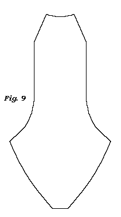
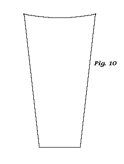
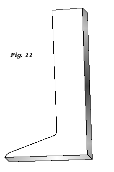
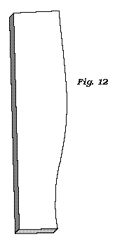
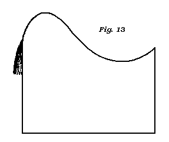
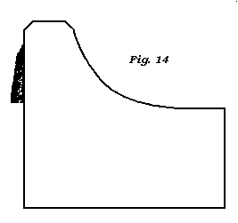

Hessian Boots.
Hessian boots were first brought into this country from Germany in the beginning of this war, about 1794 or 1795. Then they were crinkled in the front of the instab; as the present mode of blocking them was, I suppose, unknown to the Germans.
That which I believe was the effect of necessity: in Germany, became a subject of choice in this country, and improved upon.
The form of the boot at first was rather odious, as the close boot was then in wear; but like many fashions, at first frightful, then pitied, and at last adopted; so with the Hessian boots, and they have now given the fashion to all other kinds of boots made with elastic boot-legs.
Hessian boots are in general closed on the in side, but some are closed on the outside; some with back lining, and some without; but those with back linings are the best, they keep up better, and the counter is prevented from slipping under the heel.
Figs. 9. and 10. represent the front and back of a Hessian boot.�Figs. 11 and 12 represent the blocks, which any part of the country may have from London, Bristol, or from any other city or large town.




When blocking the legs, let them be first wetted in cold water; or if the
leather should be rather stiff to work, and you think that warm
water will render it more pliable, let them be wetted in warm; but mind that the
warm be not beyond blood heat; otherwise, if it should be, it will scorch the
leather, and render it of very little service.�For the fibres of the leather are
very similar to the feathers of a quill: when a certain quantity of heat is
applied to them, they will be scorched, and twisted into various directions: so
will the fibres of the leather feel the heat alike if above blood heat, though
you may not very sensibly discern the process.
Therefore, I would have you to be careful never to use hot water, if you can avoid it by any means.
When laying the front of the boot-leg on the block, mind that the first two tacks are put on each side of the block at the angle b; and that the leg be well strained across the instab in the direction a, b.�Then strain the leg down the foot, and up the leg to the shin, with tacks on each side, about an inch or two from each other, and work the folds in well at every tack, till you get it quite smooth as if there had been no fold, but one direct piece of leather.
The back lining and counter must be pasted to the back part-of the leg before you block it, and that is to be only strained direct across the block.
When dry, take them off the blocks, and press them flat before you begin to cut them
In cutting them, you must endeavour to let the seam at the lower part of the leg on each side come within the heel of the boot; and, if possible, both the front and back to be cut straight by a ruler from one end to the other; and for the front and back to be nearly of the same width from the lower part of the calf up to the top; but from the calf to the ankle the width of the back must be decreasing to come within the heel at the bottom; and both, in the small, to be the width of the heel, will he sufficient; but if the calf be full, then, the leg from the ankle to the call must be left gradually fuller than the heel, that the leg may be of a regular sweep.
If the small of a Hessian boot be left fuller than the heel, it appears, I think, very unsightly.
Indeed, many don�t like the Hessian boot, because it retains the swell or
curve the heel makes
in going on; therefore they make choice of the back strap boot, though the heel
makes the same swell in going on; but in consequence of the boot leg being
elastic, it closes to the small of the leg after the boot is on.
Please to mind, in cutting the sides of the front and bark part of the boot leg, from the ankle to the bottom, to bring them to the width of the heel, that they may be quite straight; or if they meet at bottom, and at the ankle, and: not quite so in the intermediate space, the boot will fit the closer about the heel.
With respect to the form of the top of the Hessian or Austrian boot, they depend entirely on the fancy of the time: Lately they were of a gradual sweep in front, and with a peak behind as in fig. 13; but now they are square in front and without a peak behind, as in fig 14.
 
In right and left half boots the opening at the top of the boot leg ought to be cut from a quarter to half an inch on the inside of the leg from the middle: Because the distance from the middle of the calf to the shin, on the: outside of a man�s leg, is greater than on the inside from the calf to the shin ; and as the shin appears to be the middle of the front of the leg, the front of the boot should be made to correspond; otherwise, if the opening be cut in the middle of the boot leg, it will appear, when on the man�s leg, too much on the outside of the leg.
But in a straight footed boot you cannot avoid it, nor does it appear so much as in a right and left.
The inside of the top of the front should be lined with yellow roan, or any other kind of leather, morocco, &c.
When treeing the boots, (as the trade calls the putting the boots on the boot-trees,) the boot trees ought to be sorted so, that at the calf they may be the real width of the calf of the leg of the person they are for, if they can be got, or very nearly so: the other parts will in general be in proportion.
After you have got the boot properly on the tree, lay down the seams smooth; and if the boot leg is got rather rough in the working, let there be put on it a little paste, and with a damp sponge let the roughness be laid smooth: when dry, let it be well sized, and. after it is dried of the size, and if you should not find the leg so smooth as you would. wish, let it be slicked with the long~stick, and then size it over again; but, previous to the second sizing, some will rub it over with a little candle grease, or mutton suet.
But if you intend to black: the boot with shining blacking, which is much in practice, you must avoid the grease; though the grease is is not observed after the boot is sized; any more than when the boot legs come from the currier; for that is nearly the process they make use of to grain the wax-leather, and the trade endeavour to recover the lost grain by the same means.
The top leather (if a top boot) is only to be washed with fair water
and a clean
sponge; and if there be any wrinkles caused in the working, they may be laid
smooth with any clean smooth thing, such as a long-stick, a piece of
glass, the same as the curriers make use of. Let the top be dry before
you take the boot of the trees.
Laced Half Boots.